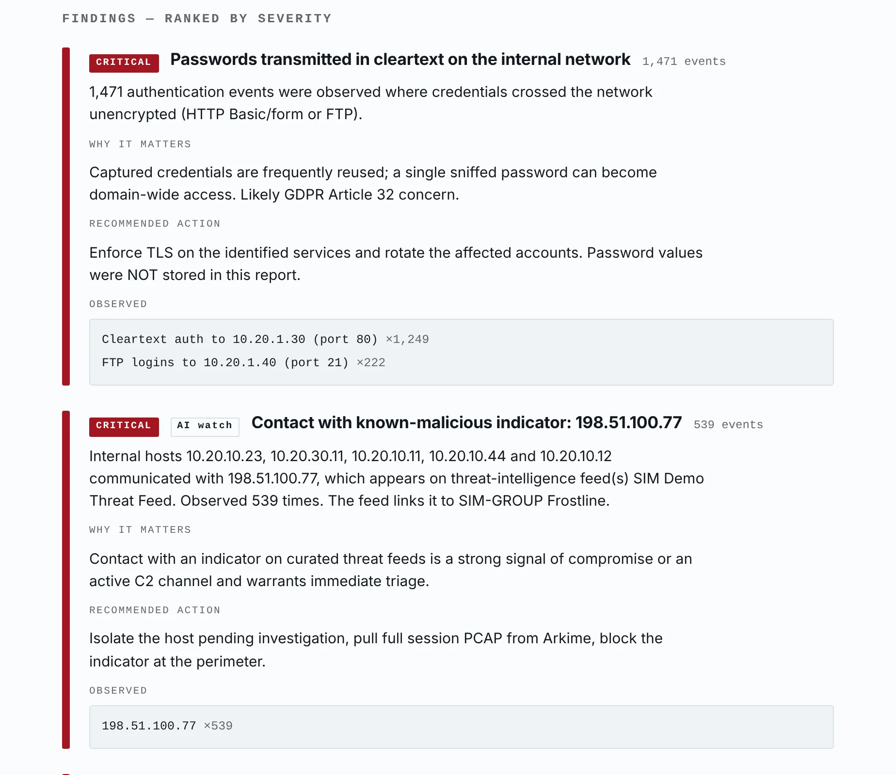

Tiefe Einblicke in OT- und IT-Netzwerke
Wissen, was in Ihrem Werksnetz passiert ist, und was zu tun ist.
Historian liest die Netzwerkhistorie, die ein Sensor in Ihrem Werk gesammelt hat, und macht daraus einen Bericht und eine Liste von Dingen, bei denen zu handeln ist.
- 3
- Ansichten eines Berichts: Geschäftsleitung, OT-Verantwortliche und die, die die Arbeit machen
- 22
- Indikatoren für KI-Agenten-Aktivität im Katalog
- 3
- Listen zum Handeln: Risiken, Vorfälle und Aufgaben
- 0
- Schreibzugriffe auf Ihr Werksnetz
01 Er hört nur zu
Auf Ihren Steuerungen wird nichts installiert, und es wird nichts an sie gesendet.
Ein Erfassungspunkt im Werk zeichnet eine Kopie des Verkehrs auf und liefert sie an den Netzwerksensor des Werks. Historian stellt dem Sensor Fragen mit einem Konto, das nur lesen darf. Er schreibt nie in den Sensor oder das Netz, und er fragt nie nach den Passwörtern, die er über die Leitung gehen sieht, sondern nur, wie viele es waren.
- Ein Netzwerksensor pro Werk, jeder mit der Historie dieses Werks
- Der Sensor ist Malcolm, die quelloffene Suite zur Analyse von Netzwerkverkehr, und bleibt ein eigenes System
- Es muss kein Port zum Internet geöffnet werden: Sensoren und Historian treffen sich in einem privaten Netz
- Läuft auf Ihrem eigenen Server
- Werksnetz
- Erfassungspunkt
- Netzwerksensor
- Historian
- Risiken, Vorfälle, Aufgaben
02 Ist diesen Zahlen zu trauen?
Der Bericht beginnt damit, wie vollständig das Werk beobachtet werden konnte.
Ein Werk, das still ist, weil sein Sensor ausgefallen war, darf nie wie ein Werk gelesen werden, in dem nichts passiert ist. Deshalb beginnt jeder Bericht damit, was die Sensoren aufgezeichnet haben, wo die Lücken sind und ob die folgenden Zahlen vollständig oder Untergrenzen sind.
- Erfassungspunkte, die liefern, und wann jeder zuletzt geliefert hat
- Lücken in der Aufzeichnung, auf die Minute genau
- Lehnt der Sensor eine Frage ab, entsteht der Bericht trotzdem und sagt, was fehlt

03 Befunde, nach Schweregrad
Jeder Befund nennt, warum er wichtig ist, was zu tun ist und die Belege.
Ein Befund ist etwas im Zeitraum Beobachtetes, das eine Entscheidung braucht. Die schwersten stehen zuerst, und jeder lässt sich auf die Datensätze dahinter zurückführen.
- Passwörter im Klartext, Kontakt zu bekannt bösartigen Adressen, Geräte, die nicht im Inventar stehen
- Trends gegenüber dem Zeitraum davor, damit sichtbar wird, ob das Risiko steigt oder sinkt
- PDF, Excel und PowerPoint von jeder Seite

04 Ein Bericht, drei Leser
Geschäftsleitung und OT-Verantwortliche stellen unterschiedliche Fragen. Jeder bekommt seine eigene Ansicht.
Die Zusammenfassung für die Geschäftsleitung antwortet auf einer Seite. Die Ansicht für OT-Verantwortliche geht bis zur Steuerung. Der vollständige Bericht enthält die Belege für alle, die die Arbeit machen.
Fragen für die Geschäftsleitung
- Steigt oder sinkt das Risiko?
- Wissen wir, was in unserem Netz ist?
- Sind die Netzwerkzonen getrennt?
- Sprechen Werksgeräte mit dem Internet?
- Wer hat Fernzugriff auf das Werk?
- Wurden bekannte Angreifer gesehen?
- Wurde Schadsoftware über das Netz bewegt?
- Welches Angreiferverhalten wurde beobachtet, in Begriffen von MITRE ATT&CK?
Fragen für OT-Verantwortliche
- Wer hat Befehle an Steuerungen gesendet?
- Wer spricht mit welcher Steuerung?
- Was hat sich gegenüber dem Zeitraum davor geändert?
- Kommunizieren die Steuerungen fehlerfrei?
- Welche Industrieprotokolle sind im Netz?
- Was ist über jedes Werksgerät bekannt?
- Welche schwachen oder veralteten Praktiken sind im Einsatz?
- Welche Software und welche Versionen wurden gesehen?

05 KI-Agenten im Netz
Sehen Sie, welche Rechner sich wie ein Programm verhalten und nicht wie ein Mensch.
KI-Agenten kommen in Büro- und Werksnetze, genehmigt oder nicht. Historian stellt jeden Rechner zusammen, der einen Indikator für KI-Aktivität zeigt, was er im Netz getan hat und ob er auf Ihrer Liste der genehmigten steht.
- Ein Katalog von Indikatoren, und welche davon jeder Rechner gezeigt hat
- Rechner, die außerdem im Netz gehandelt haben, werden als bedenklich markiert
- Gruppen von Rechnern, die im Gleichschritt arbeiten

06 Schlussfolgerungen
Der Bericht endet in drei Listen, mit denen jemand arbeiten kann.
Risiken gehen in ein Register, Vorfälle an ein SOC, Aufgaben in eine Warteschlange. Jede Bewertung trägt die Regel, die sie ergeben hat, denn es sind erste Lesungen aus einem einzigen Zeitraum, und die Seite sagt das.
- Senden Sie die drei Listen mit einem Knopf an ein SpaceRisk-Register. Nichts wird gesendet, bevor er gedrückt wird
- Erneutes Senden aktualisiert das zuvor Gesendete und erzeugt nie eine zweite Kopie
- Exporte für ein SIEM (OCSF) und für Jira, ServiceNow oder ein Postfach, dazu Excel und PowerPoint
Für das Risikoregister
Risiken
Eine dauerhafte Schwäche, bewertet als Wahrscheinlichkeit mal Auswirkung, jeweils von 1 bis 5, und einem Verantwortlichen zugeordnet.
Für das SOC
Vorfälle
Etwas, das passiert ist und jetzt eine Reaktion braucht.
Für eine Warteschlange
Aufgaben
Ein Stück Arbeit mit einer Warteschlange, einem Fälligkeitsdatum und einem Weg zu erkennen, wann es erledigt ist.

07 Alle Werke auf einmal
Ordnen Sie Ihre Werke nach dem, was zu entscheiden ist.
Mit mehr als einem Werk sehen Sie sie nebeneinander: welches zuerst Aufmerksamkeit braucht, was an mehreren gilt und was nur an einem, und welche nicht vollständig überwacht werden konnten.
- Jede Zeile öffnet den Bericht dieses Werks
- Befunde, die mehrere Werke teilen, werden zusammen gezeigt
- Unbeobachtet wird nie als ruhig dargestellt

Sehen Sie, wie Historian Ihr eigenes Netz liest.
Erzählen Sie uns von Ihren Werken, und wir zeigen Ihnen den Bericht zuerst mit simulierten Daten und dann mit Ihren.